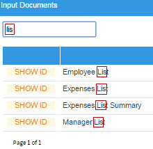
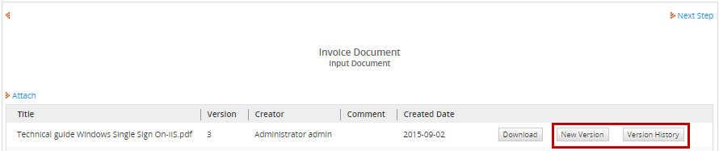
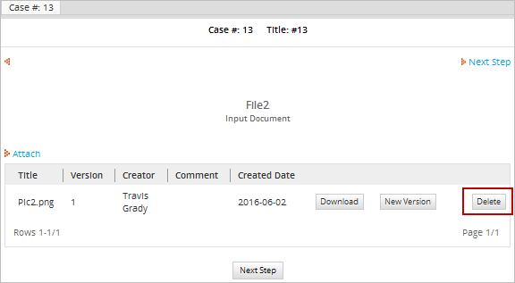
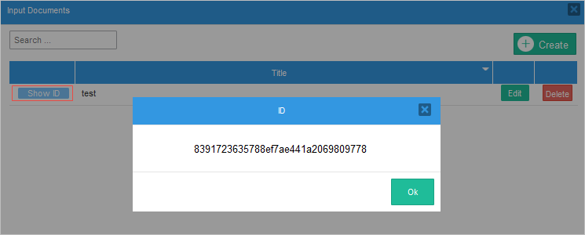

Overview
Input Document is a feature that allows the user to upload a file or files to attach them to a particular case. These files can be text documents, spreadsheets, images or any other kind of file. An Input Document can be a hard copy (which has been printed out and stored in a filing cabinet), a digital file that is uploaded to the case, or both.
An Input Document can also be related to a file object in a Dynaform.
Creating Input Documents
To create a new input document go to the main toolbox of the Process Map. Hover the pointer of the mouse over the + symbol next to Input Documents and click on Create. Take into account that input documents created inside a project can be used only by elements related to the same project and can not be invoked from other projects or processes.

A new popup window will allow you to configure the new input document's characteristics.

Here, the following properties can be defined:
- Title: Enter a title to identify the input document.
- Document Type: Select whether the uploaded document will be digital, printed, or both. This option is only a reference to the process designer to indicate that a printed file may also exist outside ProcessMaker.
- Description: Enter a description of the input document, which will help the user better understand its purpose and what type of document should be submitted.
- Enable Versioning: Select Yes to keep multiple versions of the input document. Versioning is useful if the same input document will be submitted multiple times over the course of a case or to maintain an audit trail.
- Destination Path: Create the name of a folder where this input document will be placed in CASES > Documents. To use a variable in the folder name, click on the [@@] button to select a variable.
For example: Receipts_@@USR_USERNAME
To place the input document inside a subfolder inside other folders, enter a path to that folder, separating each folder with a / (forward slash).
For example: Receipts/@@USR_USERNAME/@@subject_@@date
To see a list of input documents, output documents and attached files found in each folder, go to CASES > Documents and click on the folder.
Note: The Destination Path only effects where the files are found in the graphical interface. It does not effect where input documents are stored in the file system. - Tags: Enter the name of the identifying tag(s), that will be associated with this input document. To specify more than one tag name, separate each tag name with commas. Click on the [@@] button to select the variable that will be used in the tag name. Tags are really useful when looking for input documents in the ProcessMaker database.
Allowed file extensions: A required field that defines which file extensions are allowed to be uploaded as an input document. When uploading a file as an input document, ProcessMaker will verify that only files with the specified extension(s) are uploaded. The following format is used to define allowed file extensions:
*.* Allows any type of file.
*.pdf, *.jpg, *.docx Specific types of files. To specify more than one type, separate them using commas.
Note: This feature can only be used to verify the file extension, not to specify the allowed file name of an input document. For example: Student_*.pdf does not validate that all input document file names should start with "Student_".
Also, see the hint below for help defining the extensions:
To use this feature, the fileinfo extension must be enabled. This extension not only verifies the extension of the file, but also ensures that the extension matches the file's contents so that the user cannot upload a dangerous file (for example, when an .exe file has been renamed with the .jpg extension).
- Maximum file size: A required field that defines the maximum size in KB or MB of the file to be attached. If set to zero, then the file size is unlimited.
Note: This value can not be larger than the value configured in the php.ini file. For more information, please go to the Configuring an Input Document Maximum Size section.
After filling in the fields with the necessary information, click on Save.
Configuring the Maximum Size of an Input Document
Since uploaded files are stored as files in the hard drive, their size can be as large as allowed by the server's operating system and hard drive.Nonetheless, PHP is configured to allow the upload of files no larger than 2MB by default. To increase the maximum size of uploaded files, edit your php.ini file to allow for larger file uploads.
Look for the "File Uploads" section and set file_uploads = On and increase the size of upload_max_filesize:
; File Uploads ;
;;;;;;;;;;;;;;;;
; Whether to allow HTTP file uploads.
file_uploads = On
; Temporary directory for HTTP uploaded files (will use system default if not specified).
;upload_tmp_dir =
; Maximum allowed size for uploaded files.
upload_max_filesize = 2M
Uploaded files are passed to the ProcessMaker server as POST data, whose default maximum size is 8MB. If larger files need to be uploaded, also increase the size of post_max_size:
post_max_size = 32M
Input Document Management
To see the list of input documents created in the project, click on the option Input Documents in the main toolbox.

Where:
-
Text to Search: Enter the title of the input document in this field. As text is entered, all coincidences are shown in the list below.

-
Create: This option opens the input document creation window. It is possible to use this option to create an input document, or this option.
-
Show ID: Click on this option to obtain the Unique Identification of the input document. For instance, use this ID to create an input document using the PMFAddInputDocument() function.
-
Title: This column shows the title of the input documents created inside the project. This list is sorted in ascending order. To sort the list of input documents in descending order click on the down triangle next to "Title".
-
Edit: Click on this option to edit the information of the input document.
-
Delete: This option deletes the input document, and the following confirmation message will be shown:

Select Yes to delete the input document, and the flash message "Input document deleted successfully" will be shown in the upper part of the Process Map.
-
Pagination: When there are more than 10 documents created in the project, a new page is added to this window. To navigate through these pages use the > or < options. To view a specific page, click on the number of the page of this control.
Inserting Input Documents into a Process
After creating an input document, decide if the input document will be submitted to one or more processes of the project. Remember that users have the option to upload multiple files for each input document.
If an input document will change over the course of a case, it may be a good idea to have multiple points in the process where the same input document can be submitted so that new versions of the document can be submitted. If versioning is enabled, then each version will be preserved, allowing an auditor to see how the document changed over the course of the case.
As a Step
To insert an input document as a step inside a task, the input document must be already created in the process. Then, right click on the task where the input document will be assigned, and select the Steps option from the dropdown menu. A modal window opens where the list of elements available within the process are listed in the Available Elements panel. These elements are organized according to their category: Triggers, Dynaforms, Input Documents, Output Documents and Externals. On the other hand, the elements already assigned to the task are listed inside the Assigned Elements panel.
To add an input document to the task, go to the list of Available Elements, grab the input document by its name, and take it to the Assigned Elements list without releasing the button of the mouse. If the element is the first to be added, a gray section is immediately marked and the input document will be added regardless of where it is dropped. A flash message is shown at the top of the panel indicating that the step was assigned correctly.

In a Dynaform
After creating an input document, use a File control in a Dynaform to allow the user to submit the input document (this option is available as of version 3.0.1.5). Remember that users have the option to upload multiple files for each input document.
Submitting Input Documents
When a case comes to an Input Document step, a form will appear prompting the user to submit the document.

If it is a digital document, click on the Attach link and then browse for the file to upload. A comment about the input document can be added in the Comments field. Then click on Save to add the new input document.

If it is a printed document, then simply enter the description of the document in the Comments field without uploading a file.
Additional input documents can be added by clicking on the Attach link. All the added input documents will be displayed in the list.
If versioning is enabled, new versions of an existing input document can be uploaded by clicking on the New Version button. To see a list of all the versions for an input document, click on its Version History button.

Note: When an input document file is deleted, the file remains in the server's file system and a record of the file is kept in the APP_DOCUMENT. The only change is that its status in the APP_DOCUMENT.APP_DOC_STATUS field is changed from 'ACTIVE' to 'DELETED'.
Accessing Input Documents
To view an input document of a particular case, go to the HOME menu and open the case. Then go to the Information submenu and select the Uploaded Documents option to a see a list of available input document files.
Remember that if the logged-in user is not the user currently assigned to work on the case, then Process Permissions will need to be granted so the user can view the case, or the user will need to be assigned as a Process Supervisor and granted read/write access to the input document in the permissions.

A dialog box will appear with a list of the input documents and attached files of the case. To view a document, select it and click on the Download button at the top menu to download and open it on the local computer.

Uploaded documents can be seen by going to HOME and clicking on Documents at the end of the left menu. All uploaded or generated documents will be placed there:

Remember that only users who have the PM_FOLDERS_VIEW in their role will have the access to the Documents option. Additionally, a View Process Permission needs to be assigned to the user to see the input documents.
Deleting Input Documents
To delete input documents, first assign the PM_FOLDERS_VIEW and the PM_FOLDER_DELETE permissions to the user's role to be able to access the file's folders and delete them.
Then, go to HOME and at the end of the left menu, select the Documents option. Navigate through the directory tree until the desired file is found. Right click on it and select the Delete option.

It is possible to delete one or more files at a time by selecting them using the SHIFT or CTRL keys.

A confirmation box is displayed before deleting the files. Click on Yes to delete the file or click on No to close the box without deleting the file.

Moreover, it is possible to delete an input document of a particular case when the input document is assigned as a step of a task.

To delete an input document, assign a Delete Process Permission to the user:

Then, open the case, click on the Steps button and select the input document in the list of steps. The input document file will be listed with a Delete button to remove it.

Click the Delete button and a confirmation message will be displayed before deleting the file.

Finally, click on Yes to delete the file or click on No to close the message without taking any action. If Yes is chosen, the file will be deleted and the case window will refreshed displaying a "No records found" message.

Input Document Storage
Information about input document files and any other files uploaded while running cases is stored in the wf_<WORKSPACE>.APP_DOCUMENT table. The filenames of input document files is stored in the wf_<WORKSPACE>.CONTENT table where the CON_CATEGORY field equals 'APP_DOC_FILENAME'.
To search for all the input document files of a particular case, first find the case's unique ID and then use it in the following SQL query:
WHERE D.APP_DOC_UID=C.CON_ID AND D.APP_UID='XXXXXXXXXXXXXXXXXXXXXXXXXXXXXXXX'
AND C.CON_CATEGORY='APP_DOC_FILENAME' AND D.APP_DOC_STATUS='ACTIVE'
When an input document file is uploaded while running a case, it is stored in the file system of the ProcessMaker server. It is renamed with its unique ID, but it retains its original file extension, such as .xls, .doc, .pdf, etc.
Input document files are stored at the following location on the ProcessMaker server:
INSTALL-DIRECTORY/processmaker/shared/sites/WORKSPACE/files/XXX/XXX/XXX/XXXXXXXXXXXXXXXXXXXXXXX/CASE-DOCUMENT-ID_VERSION.EXTENSION
Where:
WORKSPACEis the workspace name, which isworkflowby default in ProcessMaker.XXX/XXX/XXX/XXXXXXXXXXXXXXXXXXXXXXXrepresents a series of 4 subdirectories created from the case's unique ID to avoid the 32KB file limits of Linux's ext3 file system. If using a workspace that has been imported from ProcessMaker version 2.X, then the case's unique ID probably hasn't been broken into 4 subdirectories. The G::getPathFromUID() method can be used to produce the correct path to the case's files by automatically detecting whether to break the case ID into 4 subdirectories or not. The unique ID of the current case can be found in the@@APPLICATIONsystem variable.CASE-DOCUMENT-IDis the unique ID of the file, which is stored in the wf_WORKSPACE.APP_DOCUMENT.APP_DOC_UID field in the database, where the case's ID is in the APP_UID column.VERSIONis the file's version number, which can be found in the wf_WORKSPACE.APP_DOCUMENT.DOC_VERSION field in the database. The version numbers start counting from1. If the versioning option is not enabled in the properties of the input document, then the version number will always be1.EXTENSIONis the file extension of the input document file, such asdoc,pdf,xls, etc. The file extension can be found by querying the wf_WORKSPACE.CONTENT.CON_VALUE field in the database where CON_ID is equal to the file's unique ID andCON_CATEGORY='APP_DOC_FILENAME'.
Note: All this information about the file can also be found by using the AppDocument::Load() method.
Example in Linux/UNIX:
/opt/processmaker/shared/sites/workflow/files/953/410/836/56f478db365c17079559272/70178872256ec84a7a2eb59060003782_1.pdf
Example in Windows:
C:\Users\Admin\AppData\Roaming\ProcessMaker-3_0_1_7\processmaker\shared\sites\workflow\files\953\410\836\56f478db365c17079559272\70178872256ec84a7a2eb59060003782_1.pdf
Where 95341083656f478db365c17079559272 is the case's unique ID, 70178872256ec84a7a2eb59060003782 is the file's unique ID, 1 is the version number of the file, and .pdf is the file's extension.
In a trigger, the path to an input document file can be determined using the defined constants PATH_DOCUMENT (which would contain a path such as "/opt/processmaker/shared/sites/workflow/files/") and PATH_SEP (which is "/" or "\" depending on the operating system):
$g = new G();
$inputDocPath = PATH_DOCUMENT . $g->getPathFromUID($caseId) . PATH_SEP . "70178872256ec84a7a2eb59060003782_1.pdf";
Changing the File Location
To store input and output Document files in a different location, such as a NAS, then copy the contents of the file directory to the new location and then edit the source code in workflow/public_html/sysGeneric.php and change the location of PATH_DOCUMENT, which is defined at line 619.
Warning: Do not make any other changes to the sysGeneric.php file, or functionality will break. ProcessMaker does not recommend changing ProcessMaker core files. Proceed at your own risk.
For example, to store files on a NAS mounted drive at /media/nas/processmaker:
Make sure to include the forward slash in Linux/UNIX or the backward slash in Windows at the end of the path.
Input Documents in Triggers
It is possible to create triggers to manipulate input document files. Take into account that when a trigger is assigned to be executed after an input document step, the trigger is executed before the file is saved and processed.
Once the UID for the input document definition is known, then the following code can be used in a trigger to look up the unique ID of the first input document that has been uploaded to the current case:
$case = @@APPLICATION; //UID for the current case
$query = "SELECT APP_DOC_UID, DOC_VERSION FROM APP_DOCUMENT WHERE APP_UID='$case'
AND DOC_UID='$docDef' AND APP_DOC_STATUS='ACTIVE'";
$result = executeQuery($query);
//check if document found
if (is_array($result) and count($result) > 0) {
@@DocUid = $result[1]['APP_DOC_UID'];
}
else {
@@DocUid = '';
}
To create an array of the unique IDs of all the input document files of the current case:
$case = @@APPLICATION; //UID for the current case
@=DocUids = array();
$query = "SELECT APP_DOC_UID FROM APP_DOCUMENT WHERE APP_UID='$case' AND
DOC_UID='$docDef' AND APP_DOC_STATUS='ACTIVE' ORDER BY APP_DOC_INDEX ";
$result = executeQuery($query);
if (is_array($result) and count($result) > 0) { //check if document found
foreach($result as $doc) {
@=DocUids[] = $doc['APP_DOC_UID'];
}
}
Once the unique ID of the case, the unique ID for the input document file, its version number, and its original file extension is known, then the file can be opened with PHP's file_get_contents() or file() function.
Send Input Document Files as Email Attachments
Input document files can be sent as attachments in an email with the PMFSendMessage()function.
The following trigger example shows how to look up the files in the APP_DOCUMENT for a specified input document in the current case. Using the file's ID and version number that were obtained from the database, the AppDocument::Load()method is then called to obtain the filename and file extension for each file. The path where the files are stored on the ProcessMaker server is constructed, using the defined constants PATH_DOCUMENT and PATH_SEP, and the G::getPathFromUID() method. Then, the
filename and path for each file is added to the associative array with the PMFAddAttachmentToArray()function, which will be passed as the last parameter to PMFSendMessage(). The Cases::getUsersParticipatedInCase()method is used to get a list of users who have participated in the case. Finally, PMFSendMessage()is called
to send out the email. Note that the email is only added to the queue in the APP_MESSAGEtable and
it will not be sent until the cron.php file is executed.
$caseId = @@APPLICATION;
//find the UID and version for the uploaded Input Document file(s):
$query = "SELECT APP_DOC_UID, DOC_VERSION FROM APP_DOCUMENT
WHERE APP_UID='$caseId' AND DOC_UID='$inputDocId' AND
APP_DOC_STATUS='ACTIVE' ORDER BY APP_DOC_INDEX";
$aFiles = executeQuery($query);
if (is_array($aFiles) and count($aFiles) > 0) {
$aAttached = array();
foreach ($aFiles as $aFile) {
$d = new AppDocument();
$aDoc = $d->Load($aFile['APP_DOC_UID'], $aFile['DOC_VERSION']);
$filename = $aDoc['APP_DOC_FILENAME'];
$ext = pathinfo($filename, PATHINFO_EXTENSION);
$g = new G();
$filePath = PATH_DOCUMENT . $g->getPathFromUID($caseId) . PATH_SEP .
$aFile['APP_DOC_UID'] .'_'. $aFile['DOC_VERSION'] .'.'. $ext;
$aAttached = PMFAddAttachmentToArray($aAttached, $filename, $filePath);
}
//get users who have participated in case:
$c = new Cases();
$aUsers = $c->getUsersParticipatedInCase(@@APPLICATION);
$to = '';
foreach ($aUsers['array'] as $userUID => $userInfo) {
$to = (empty($to) ? '' : ', ') . $userInfo['USR_EMAIL'];
}
PMFSendMessage($caseId, 'amos@processmaker.com', $to, '', '',
'Invoices for case #'.@@APP_NUMBER, 'invoiceTemplate.html', array(), $aAttached);
}
Set the above trigger to execute before the next step after the input document (or Dynaform that contains a File control associated with the input document. If the input document is the last step in the task, then set the above trigger to execute before assignment. Do NOT set this trigger to fire directly after the input document or the Dynaform with a File control, because at that point, the Input Document files have not yet been saved in the server's file system.
Links to Input Documents
An input document (and its list of files) that has been assigned as a step in a task can be attached and reviewed with the following URL. Remember that this URL only works with the current task of the current case, as long as the currently logged-in user has the proper privileges to open the case.
http://<IP-ADDRESS>/sys<WORKSPACE>/<LANG>/<SKIN>/cases/cases_Step?TYPE=INPUT_DOCUMENT&UID=<OBJECT-UID>&POSITION=<STEP-NUMBER>&ACTION=ATTACHThe <OBJECT-UID> is the unique ID of the input document and the <POSITION> is the positive integer for the step in the task, which starts counting from 1. The UID can be looked up at ProcessMaker Designer > Input Documents > Show ID.

Or in the wf_<WORKSPACE>.CONTENT.CON_ID table.

The POSITION can be looked up in the wf_<WORKSPACE>.STEP.STEP_POSITION field.

The easiest way to find the right URL is to turn on MySQL Logging and run a case while looking at the output in the log file.
For example, to attach and view the input document(s) with the UID "8391723635788ef7ae441a2069809778" and is the second step in the first task:
http://example.com/sysworkflow/en/neoclassic/cases/cases_Step?TYPE=INPUT_DOCUMENT&UID=8391723635788ef7ae441a2069809778&POSITION=2&ACTION=ATTACH
If this URL is entered in a web browser without an open session of ProcessMaker or a case, then the user will lose her/his session and will be redirected to the login screen. Remember that the logged-in user will not be able to access the input document and its files if the current task of the opened case is not the one containing the Input Document step. Also, the user will need to have been assigned Process Permissions to view the input document and/or be a Process Supervisor to change the files in the Input Document.

Links to Input Document Files
Each input document can contain a variable number of files. Input documents files (or attached files) can be accessed with the URL:
http://<IP-ADDRESS>/sys<WORKSPACE>/<LANG>/<SKIN>/cases/cases_ShowDocument?a=<CASE-DOCUMENT-UID>
Where CASE-DOCUMENT-UID can be found at wf_<WORKSPACE>.APP_DOCUMENT.APP_DOC_UID.
For example:
http://mycompany.com/sysworkflow/en/neoclassic/cases/cases_ShowDocument?a=4699401854d8262f569e9a1070221206
If versioning has been enabled, the version number (which starts counting from the number 1) can also be included in the URL:
http://<IP-ADDRESS>/sys<WORKSPACE>/<LANG>/<SKIN>/cases/cases_ShowDocument?a=<CASE-DOCUMENT-UID>&v=<VERSION>
Searching for Input Documents
If using an external application or script, the unique ID of the case document can be found with the inputDocumentList() web service. Inside a trigger or a Dynaform, the unique IDs of input document files can be looked up with the following SQL query:
To find the input document files of a specified case:
APP_DOC_TYPE='INPUT' AND APP_DOC_STATUS='ACTIVE'
To find the files of a specified input document and a specified case that was uploaded by a specified user:
DOC_UID='<input_doc_uid>' AND USR_UID='<user_uid>' AND
APP_DOC_TYPE='INPUT' AND APP_DOC_STATUS='ACTIVE'
Input documents can be marked by tags, which provide an easy way to find related Input Documents under HOME > Documents. The tags are stored in the wf_<WORKSPACE>.APP_DOCUMENT.APP_DOC_TAGS field for each input document file and multiple tags are separated by commas. To find all input document files of a case with a specified tag:
APP_DOC_STATUS='ACTIVE' AND APP_DOC_TAGS LIKE '%%'
To find all input document files created between a certain date range:
APP_DOC_CREATE_DATE>='' AND APP_DOC_CREATE_DATE<=''
To find both the UID of the case document and its original filename, query the CONTENT table:
WHERE AD.APP_DOC_TYPE='ATTACHED' AND AD.APP_DOC_STATUS='ACTIVE' AND
AD.APP_DOC_UID=C.CON_ID AND C.CON_CATEGORY='APP_DOC_FILENAME'
To find the UID of the case document and the comment entered when the file was uploaded, query the CONTENT table:
WHERE AD.APP_DOC_TYPE='INPUT' AND AD.APP_DOC_STATUS='ACTIVE' AND
AD.APP_DOC_UID=C.CON_ID AND C.CON_CATEGORY='APP_DOC_COMMENT'
Remember that multiple files can be uploaded to an input document, so queries may return multiple records. If reading the result of a query in a trigger, then write code to loop through all the returned records in the result.
If the input document is configured to allow multiple versions of the same input document file, then also look for the record with the highest positive integer in the wf_<WORKSPACE>.APP_DOCUMENT.DOC_VERSION field. (The counting starts from the number 1.)
To find the most recent version(s) of input document file(s) of a specified case:
DOC_UID='<input_doc_uid>' AND APP_DOC_TYPE='INPUT' AND APP_DOC_STATUS='ACTIVE'
AND DOC_VERSION = (SELECT MAX(DOC_VERSION) FROM APP_DOCUMENT WHERE APP_UID='' AND
DOC_UID='<input_doc_uid>' AND APP_DOC_TYPE='INPUT' AND APP_DOC_STATUS='ACTIVE')
Link to an Input Document File in a Dynaform
To insert a link into a single input document file inside a Dynaform, create a trigger that uses executeQuery() to look up the unique ID of the uploaded file in the wf_<WORKSPACE>.APP_DOCUMENT.APP_DOC_UID field. Then, the filename can be found in the wf_<WORKSPACE>.CONTENT.CON_VALUE field by searching for the file's unique ID in the wf_<WORKSPACE>.CONTENT.CON_ID field and when CONTENT.CON_CATEGORY='APP_DOC_FILENAME'. Use the file's unique ID to construct the URL to access the document and assign that URL to a case variable that can be passed to the Dynaform holding the link field. Also assign the filename to another case variable that can be passed to the Dynaform.
The link field can automatically be set to the URL of the input document file and display its label by creating two case variables named @@link-field-name and @@link-field-name_label.